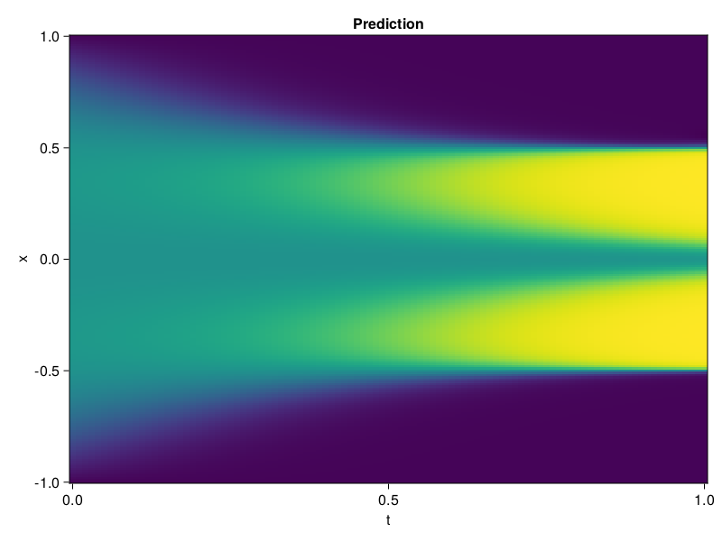

Allen-Cahn Equation with Sequential Training
In this tutorial we are going to solve the Allen-Cahn equation with periodic boundary condition from $t=0$ to $t=1$. The traning process is split into four stages, namely $t\in [0,0.25]$, $t\in [0.0,0.5]$, $t\in [0.0,0.75]$ and $t\in [0.0, 1.0]$.
using ModelingToolkit, IntervalSets
using Sophon
using Optimization, OptimizationOptimJL
@parameters t, x
@variables u(..)
Dₓ = Differential(x)
Dₓ² = Differential(x)^2
Dₜ = Differential(t)
eq = Dₜ(u(x, t)) - 0.0001 * Dₓ²(u(x, t)) + 5 * u(x,t) * (abs2(u(x,t)) - 1.0) ~ 0.0
domain = [x ∈ -1.0..1.0, t ∈ 0.0..0.25]
bcs = [u(x,0) ~ x^2 * cospi(x),
u(-1,t) ~ u(1,t)]
@named allen = PDESystem(eq, bcs, domain, [x, t], [u(x, t)])\[ \begin{align} - 0.0001 \frac{\mathrm{d}}{\mathrm{d}x} \frac{\mathrm{d}}{\mathrm{d}x} u\left( x, t \right) + 5 \left( -1 + \left|u\left( x, t \right)\right|^{2} \right) u\left( x, t \right) + \frac{\mathrm{d}}{\mathrm{d}t} u\left( x, t \right) =& 0 \end{align} \]
Then we define the neural net, the sampler, and the training strategy.
chain = FullyConnected(2, 1, tanh; hidden_dims=16, num_layers=4)
pinn = PINN(chain)
sampler = QuasiRandomSampler(500, (300, 100))
strategy = NonAdaptiveTraining(1, (50, 1))
prob = Sophon.discretize(allen, pinn, sampler, strategy)OptimizationProblem. In-place: true
u0: ComponentVector{Float64}(layer_1 = (weight = [-0.5422142148017883 -0.5704326033592224; 1.2281842231750488 1.3500460386276245; … ; 1.426193118095398 0.05075431615114212; -0.14618273079395294 -1.2275257110595703], bias = [0.0; 0.0; … ; 0.0; 0.0;;]), layer_2 = (weight = [0.3644188642501831 -0.28532132506370544 … 0.6981202960014343 -0.4232479929924011; 0.07730601727962494 -0.4587956666946411 … -0.08538071066141129 -0.3365742266178131; … ; 0.08122821152210236 -0.28496575355529785 … 0.47305426001548767 0.32196754217147827; 0.4954688251018524 -0.03792190924286842 … -0.09466983377933502 0.5506352186203003], bias = [0.0; 0.0; … ; 0.0; 0.0;;]), layer_3 = (weight = [-0.4806106984615326 0.4442392587661743 … -0.6874012351036072 0.6584349870681763; 0.3404052257537842 -0.5016949772834778 … -0.19911788403987885 -0.5512983798980713; … ; -0.13411416113376617 -0.31397294998168945 … -0.44442009925842285 -0.29966291785240173; 0.32998451590538025 -0.12849920988082886 … -0.3268899619579315 -0.4963996112346649], bias = [0.0; 0.0; … ; 0.0; 0.0;;]), layer_4 = (weight = [0.46226921677589417 -0.6926890015602112 … 0.2115945667028427 -0.31558141112327576; 0.06410648673772812 -0.4095499813556671 … 0.6378799080848694 -0.46980226039886475; … ; -0.261821448802948 0.547249436378479 … -0.254714697599411 0.5488194227218628; -0.24723869562149048 0.3730013072490692 … 0.4214515686035156 -0.2935051918029785], bias = [0.0; 0.0; … ; 0.0; 0.0;;]), layer_5 = (weight = [-0.19954735040664673 -0.13436898589134216 … -0.5438538789749146 -0.14421354234218597], bias = [0.0;;]))We solve the equation sequentially in time.
function train(allen, prob, sampler, strategy)
bfgs = BFGS()
res = Optimization.solve(prob, bfgs; maxiters=2000)
for tmax in [0.5, 0.75, 1.0]
allen.domain[2] = t ∈ 0.0..tmax
data = Sophon.sample(allen, sampler)
prob = remake(prob; u0=res.u, p=data)
res = Optimization.solve(prob, bfgs; maxiters=2000)
end
return res
end
res = train(allen, prob, sampler, strategy)u: ComponentVector{Float64}(layer_1 = (weight = [-0.13722845890947546 -0.7463093436236142; 2.207217561167627 0.6879825793198697; … ; 2.7241508995089054 0.2498148779337532; -0.017059966904493407 -1.2509885537559742], bias = [0.3405664306108514; 0.347161604386183; … ; 1.0415425497001036; 0.13997269382547953;;]), layer_2 = (weight = [0.576342349574592 -0.045295213842114934 … 1.1647513092219697 -0.04495090160543061; 0.10135442811571237 -0.5166962272442958 … -0.19476289329302493 -0.3172909460853819; … ; 0.309332171588827 -0.644070309766385 … 1.0340352118048697 0.23252211080518084; 0.46772538265537433 0.28341396275803 … -0.07140636746107099 0.5190462007703658], bias = [-0.5109448694890231; 0.14836948883457715; … ; -1.0026819580050508; 0.3766617819660154;;]), layer_3 = (weight = [-0.8939770976978095 0.32277311702176786 … -0.8447734090468894 0.5570201037105772; 0.705379491607112 -0.29579792860518694 … 0.2977990787447337 -0.6407194777571441; … ; -0.16474671730890666 -0.4102478015336824 … -0.3749114367429292 -0.37735405502726815; 0.41770248469802473 0.13525139775976788 … -0.33640326293813455 -0.33793059554121835], bias = [0.5292101302002283; -0.6516351980447401; … ; 0.2676568755039908; 0.2792699566877715;;]), layer_4 = (weight = [0.41967562693644983 -0.6365960748823292 … 0.11397475777880536 -0.5170645657168402; 0.14389235098417186 -0.46125905103747616 … 0.6183439403984694 -0.6358755010686651; … ; -0.5526313644025321 0.3064620180310128 … -0.7538929550120568 -0.35101918144163624; -0.528541240016317 0.6399493128200981 … 0.2893810171523526 -0.3854368470900739], bias = [-0.12286996400397049; 0.2282513859813674; … ; 0.21099529079133117; 0.169128541347337;;]), layer_5 = (weight = [0.0359766582055135 -0.09137646257528119 … -0.6041960304626343 -0.01050094886802792], bias = [0.004003070482813494;;]))Let's plot the result.
using CairoMakie
phi = pinn.phi
xs, ts = [infimum(d.domain):0.01:supremum(d.domain) for d in allen.domain]
axis = (xlabel="t", ylabel="x", title="Prediction")
u_pred = [sum(pinn.phi([x, t], res.u)) for x in xs, t in ts]
fig, ax, hm = heatmap(ts, xs, u_pred', axis=axis)